HTTPS认证过程 发表于 2020-05-19 | 分类于 https | 阅读数 次 refer以下两篇文章对HTTPS解析的很详细，有图有真相，很好理解: https://www.cnblogs.com/snowater/p/7804889.html https://www.cnblogs.com/xdyixia/p/11610102.html 正文HTTPS是在HTTP跟TCP之间加了一层对数据进行加解密的SSL/TLS SSL: Secure Sockets Layer TLS: Transport Layer Security HTTPS认证过程, 主要有三部分 Server证书的认证阶段, 即得到CA机构的签名 Server跟Client之间通过非对称的方式验证彼此身份 Server跟Client之间通过双方认同的随机数做对称加密数据传输 